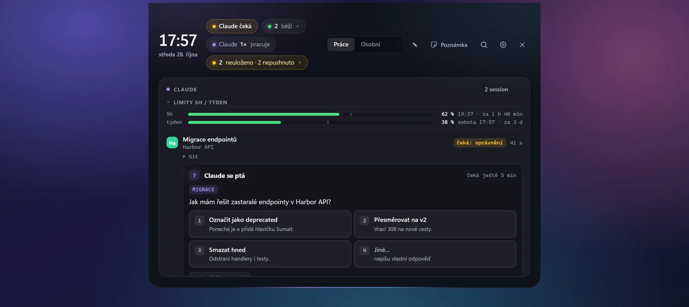
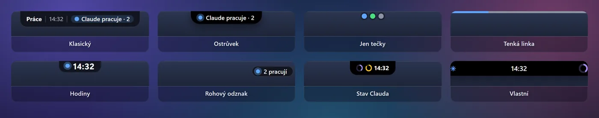
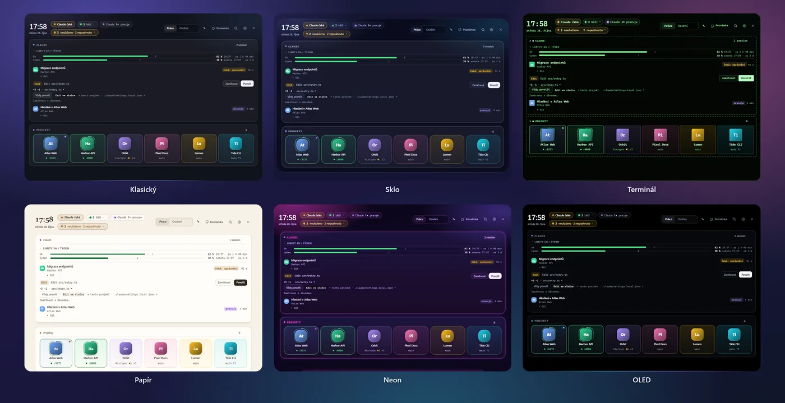
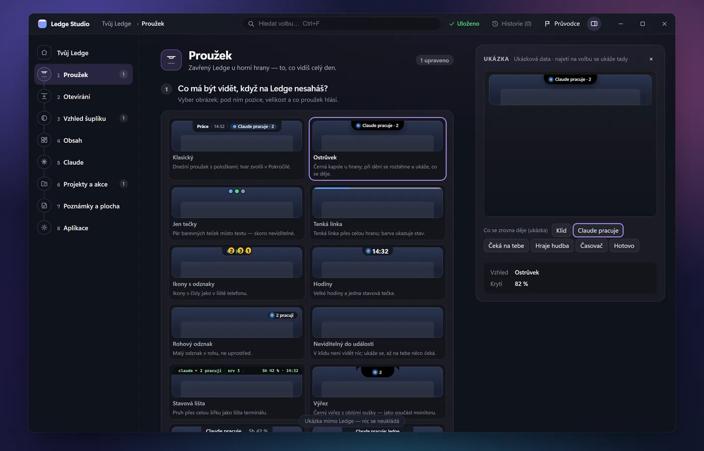
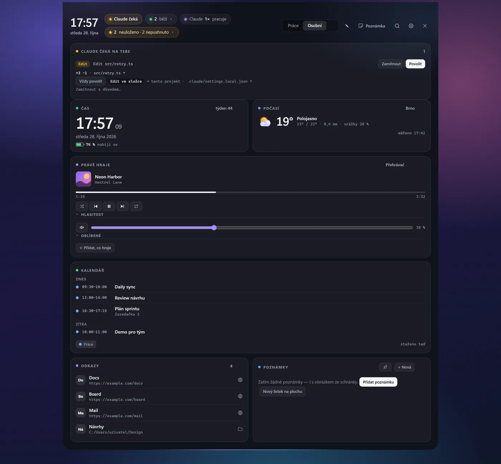
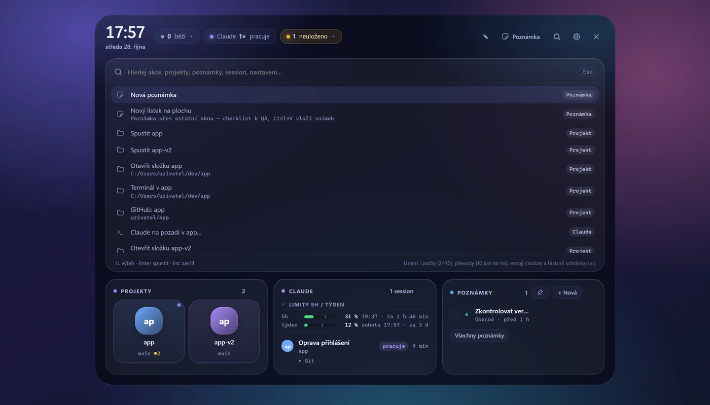

Your whole workday, one mouse move away.
Ledge is an always-on drawer at the top edge of your Windows screen: projects and dev servers, notes, quick actions — and every Claude Code session, with approvals, questions and usage limits you can handle without hunting for the terminal.
The real Ledge interface rendered with sample data (made-up projects). It slides down when you touch the top edge of the screen.
Always there. Never in the way.
Built by one developer for his own daily work on Windows with Claude Code — and shared as open source, so you can use it as it is, tune it, or fork it.
Out of your way
A thin strip at the top edge until you need it. It never takes keyboard focus from what you're typing, goes quiet while a fullscreen game runs, and is built to an idle CPU budget below 0.1 %.
Claude Code, finally visible on Windows
See every session at a glance, approve or answer Claude from the drawer, and watch your 5-hour and weekly limits — without digging through terminal windows.
Yours, local and open
No account, no cloud, no telemetry. Notes are plain Markdown files in your folder, config is one JSON file, and the source is MIT-licensed on GitHub.
Claude asks. You answer from the drawer.
Ledge connects to Claude Code through its official hooks and status line. When Claude needs you, a peek slides down — without stealing focus from your editor.
- Approvals. Permission requests show the command or diff; Allow or Deny with a click. If you don't answer, the request goes back to the terminal — Ledge never approves on its own.
- Questions and plans. Answer
AskUserQuestionprompts (single, multiple choice or your own text) and review plans: approve, or send them back with a note. - Every session. Desktop app and CLI, with subagents: waiting for you, working, idle, unfinished work. A click switches to that window.
- Limits and pace. 5-hour and weekly usage with a reset countdown, an optional pace marker and a reminder when a full window resets.
- Activity and cost. What Claude is doing right now, and a cost estimate at API prices computed from your local transcripts.
- Set up by Claude. Send Claude the setup guide; over MCP it adds your projects, links and layout — once you turn the connection on.

One drawer, the cards you choose.
Turn on only the cards you want. Arrange them on your own tabs, in four sizes.
Projects & dev servers
One tile per project: start its dev server or app, see the port and log, Open or Stop. Logos are detected from the project; uncommitted and unpushed work is flagged.
Notes & tasks
Quick Markdown notes with categories, checklists, images and reminders. Plain .md files, optional sync through your own private git repo.
Command palette
Websites, folders, files, apps and commands — all searchable with Ctrl+K, plus clipboard history that skips passwords and tokens.
File shelf
Drop files on the strip to park them, then drag them out wherever you need them.
Personal tab
Clock, weather, calendar (ICS, Outlook, Microsoft or Google account), now playing with volume and microphone mute — separate from work.
Widgets anywhere
Pin any card to the desktop or a second monitor, or write your own widgets as scripts, xbar-style. GitHub and system cards included.
A Dynamic Island–style home for your status.
NotchNook, Boring Notch and Alcove are macOS-only. Ledge brings the idea to Windows: pick how the closed Ledge looks at the top edge — and it only grows when something actually happens.
Shapes are illustrations. Also: Icons, Clock, Progress, Ticker, Minimum and Trio.





Tune it. Or fork it.
Ledge doesn't try to fit everyone out of the box. It has a lot of settings — and if it still isn't right for you, the code is yours to change.
Settings first
Cards and tabs, the closed-state look, design styles and your own colour themes, shortcuts, quick actions and script widgets — in the app, or in one config.json with a JSON schema.
Fork it with Claude Code
MIT-licensed, and the repo is set up for Claude Code: CLAUDE.md says where to start for a new card, config key, translation or settings panel, and code maps point each area to its files. Open your fork and ask for the change. (Those docs are in Czech; Claude reads them fine.)
Or let Claude configure it
AGENTS.md documents the config, note format, local API and MCP — so Claude can set up your projects, links and layout without touching the code.
Three steps. No admin rights.
Download
Get Ledge_<version>_x64-setup.exe from the latest GitHub release. It installs for your user only, into %LOCALAPPDATA%\Ledge.
Get past SmartScreen
The installer isn't code-signed yet, so Windows says the publisher is unknown. Click More info → Run anyway.
Touch the top edge
Move the mouse to the top edge of the screen. A short setup guide finds your repos, apps and Claude Code on first run.
Why does Windows warn me?
SmartScreen warns about any installer without a paid Authenticode certificate — that's what “unknown publisher” means, not that a virus was found. Ledge doesn't have that certificate yet; it's planned.
What you can check today: every release lists the installer's SHA256, and the source is public. Updates inside Ledge go further — they're verified against a signing key built into the app before anything runs.
Get-FileHash .\Ledge_*_x64-setup.exe -Algorithm SHA256Compare the result with SHA256SUMS.txt in the release.
Requirements: Windows 10 or 11 (x64) with the Microsoft Edge WebView2 runtime (preinstalled on Windows 11). Claude Code is optional.
No telemetry. No account. No cloud.
Ledge only goes online for things you can see and switch off.
What goes to the network
The update check (GitHub releases of this repo, every 6 hours by default — can be turned off). Weather from Open-Meteo, only when you set a location. A one-time favicon for a website shortcut. Calendars, mail and notes sync only when you set them up. The Anthropic status check is off by default.
What stays on your PC
Claude Code sessions, hooks, limits and cost estimates are read locally. The local API listens on 127.0.0.1 only and rejects browser requests. Account sign-in happens in your browser and tokens live in Windows Credential Manager.
Questions
Is Ledge free?
Yes. Ledge is free and open source under the MIT license. There is no paid tier and no account.
Do I need Claude Code?
No. Without Claude Code, Ledge is a project launcher, dev-server manager, notes app and quick-action drawer. With Claude Code, it also shows your sessions, approvals, questions and limits.
Can Ledge approve things for Claude by itself?
No — by design. Only a click from you approves a request. If you don't respond in time, the request returns to the terminal; nothing is ever auto-approved.
Will it get in the way while I type or play?
Ledge never takes keyboard focus when it opens on its own, and it goes quiet while a fullscreen game is running.
Is it a Windows version of NotchNook or Dynamic Island?
In spirit, yes: a drawer and status area at the top of the screen, with Island and Notch looks and a liquid opening animation. It's built for Windows and for developer workflows rather than as a clone.
How do updates work?
Ledge checks this repo's GitHub releases and shows a “New version” chip. It downloads the installer over HTTPS, verifies its SHA256 and the publisher's signature, and installs only when you click.
macOS or Linux?
Not today. Ledge is Windows-only (10 and 11, x64).
How do I uninstall it?
Windows Settings → Apps → Ledge. Your config and notes stay in your folders.
Roadmap
Work in progress — no dates promised.
- In progressLedge Studio — rebuilt settings for looks and layout.
- In progresswinget and Scoop — install with one command.
- PlannedWindows code signing (Authenticode) — so SmartScreen stops warning.
- PlannedClaude activity polish — clearer phases and errors in the live activity card.
Give your screen's top edge a job.
Free, open source and under 7 MB. If Ledge helps you, a star on GitHub helps others find it — and issues and ideas are very welcome.